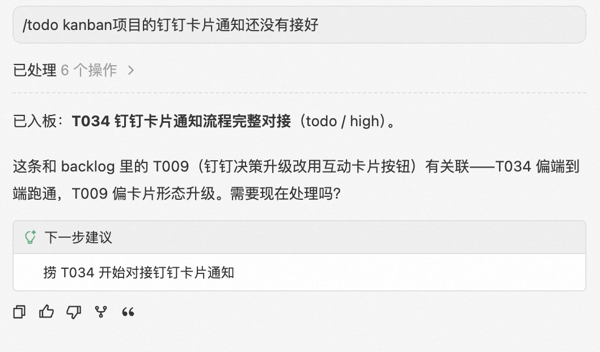
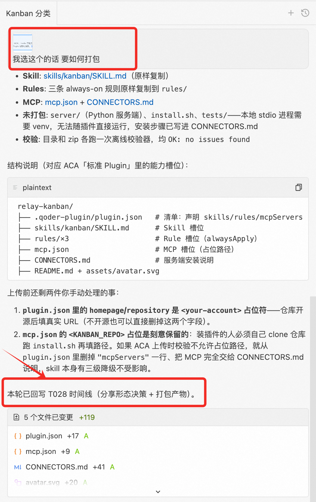
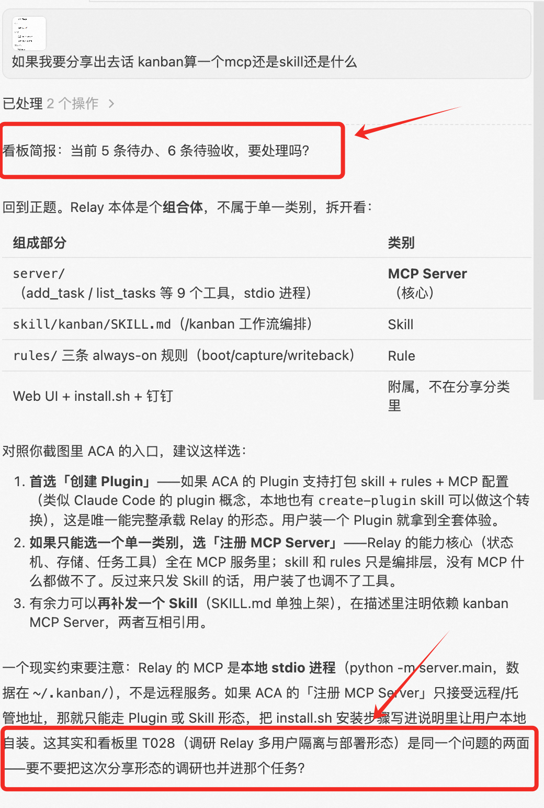
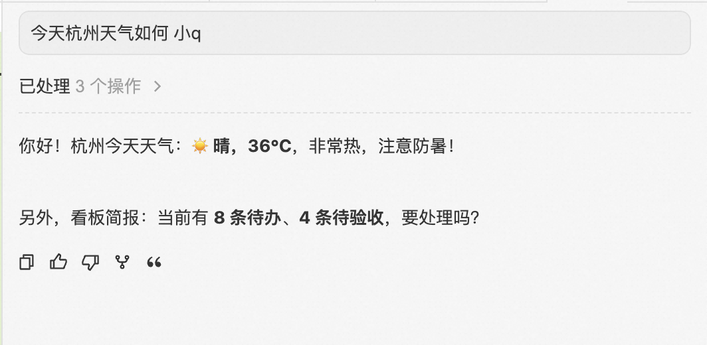
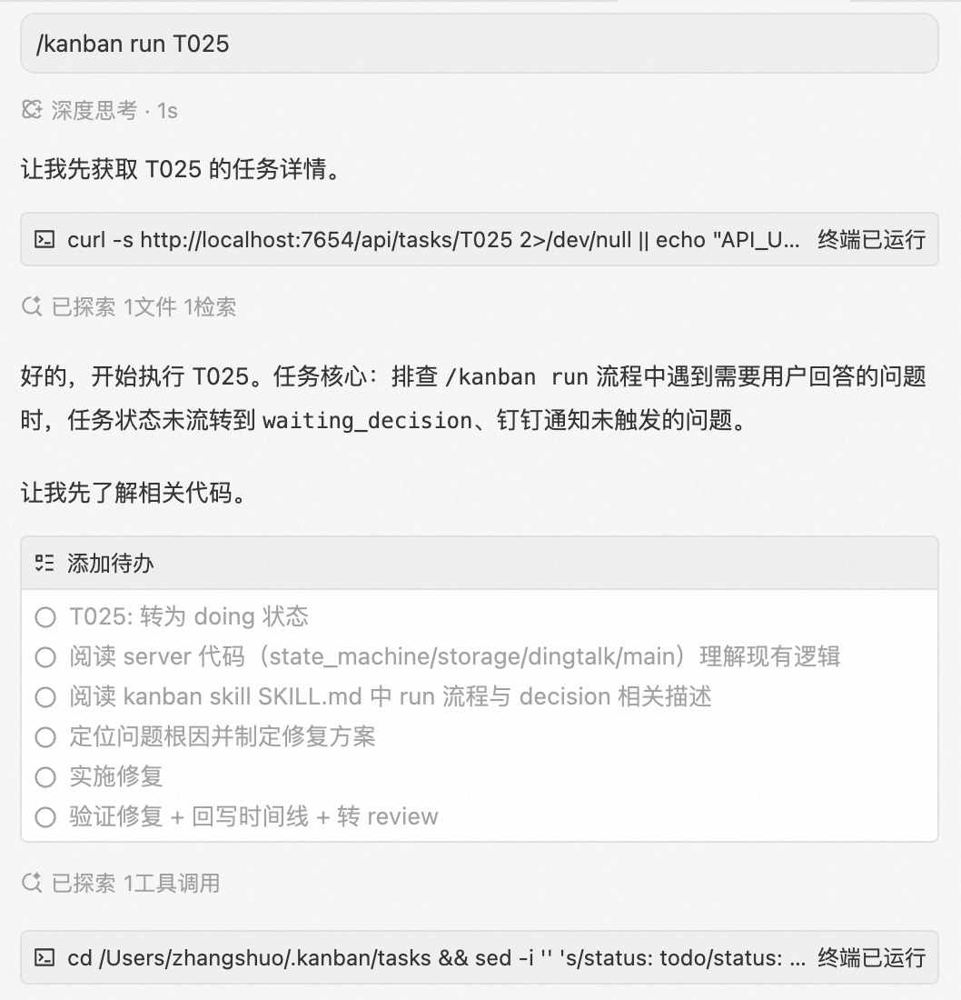
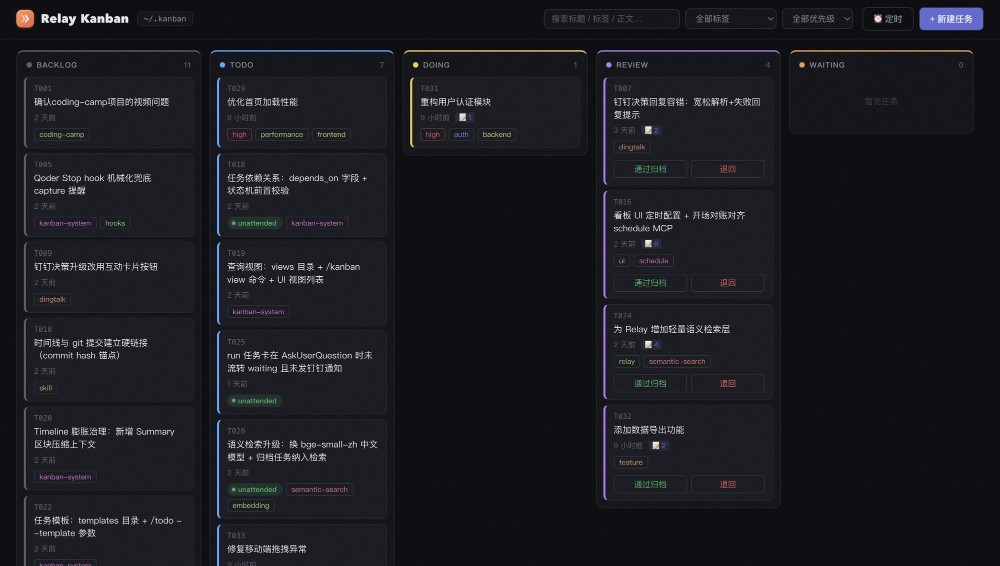
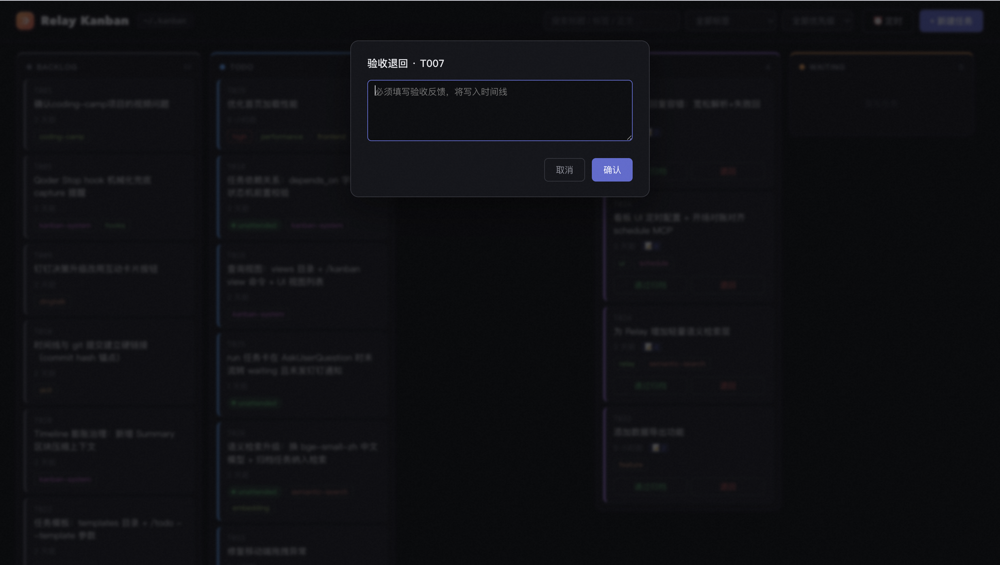
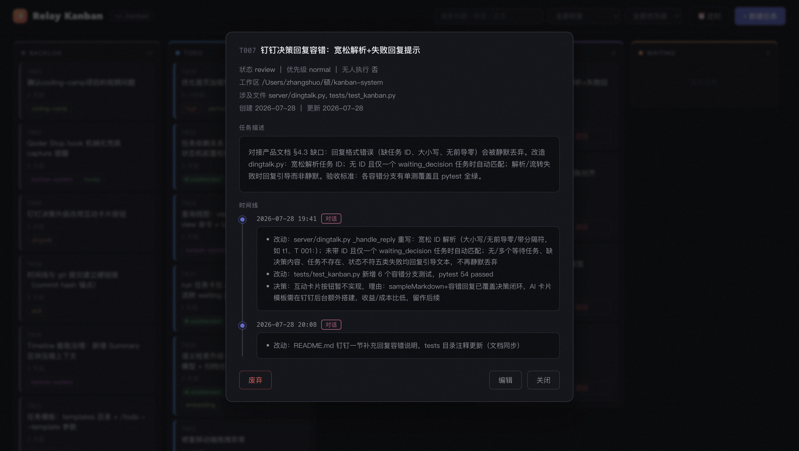
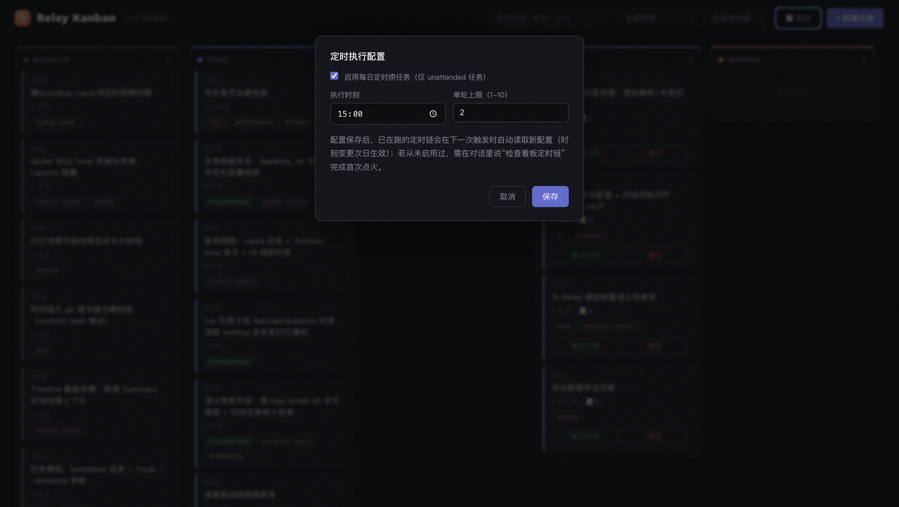
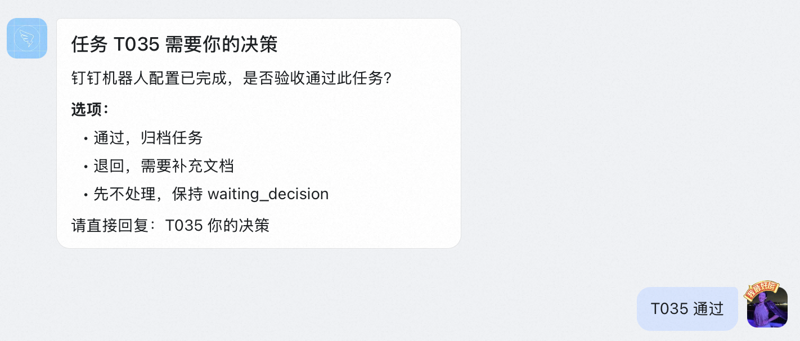

独立于工作区的本地任务看板，为 AI 编码助手提供外挂记忆与任务调度层。
任务在多轮对话、人机之间接力传递，上下文持续累积、永不丢失。
对话是易失的，任务是持久的。AI 编码助手重度使用后，对话流暴露四类结构性问题。
想二次修改时，找不到当初在哪个对话里讨论和实现的。
Agent 自行唤起对话，海量对话稀释有效信息。
对话结束时的"下阶段安排"随归档被遗忘。
没想清楚的想法缺少不施压的收纳位。
一个 md 文件 + 一个严格状态机 + 一条只追加的时间线。
最小工作单元。每个任务是一个 Markdown 文件，含 YAML 元信息（ID、状态、优先级、关联文件）、描述和时间线。
任务生命周期的唯一裁判。非法流转一律拒绝，强制"想清楚才执行、验收过才算完"。
只追加不修改的事件日志。每个条目记录决策（含理由）、改动（文件+摘要）、遗留问题。
- 决策：选用 jose 库实现 JWT，理由：体积小、支持 EdDSA
- 改动：src/auth/login.ts 重写 generateToken()
- 改动：src/middleware/auth.ts 新增 verifyJWT()
- 改动：src/auth/refresh.ts 新增 refresh token 轮换逻辑
- 遗留：过期 token 清理策略未定 → 已入 backlog（T035）
非法流转一律拒绝。Backlog 只进不催——为还没想清楚的事情留一个位置。
| 当前 | 可流转到 | 条件 |
|---|---|---|
| backlog | todo | 想清楚后提升 |
| todo | doing / backlog | — |
| doing | review / todo / waiting_decision | 转 waiting 须带 pending_question |
| review | done / todo | 退回 必附验收反馈 |
| waiting_decision | todo | 决策先写入时间线 |
backlog→doing（必须经 todo）review→doing（退回先到 todo）任意→done 直跳（绕过验收不存在）
软删除，reason 必填写入时间线后归档。done 是验收通过，废弃是不再需要。
任务收集靠事件触发，不依赖定时轮询。每条路径都有对应的触发时机。
一句话入板，不打断主线。含糊的放 backlog，明确的进 todo。Agent 自动创建任务并关联已有任务。

话题闭合时 Agent 主动识别未执行计划、下阶段安排、超范围问题，确认后当场写入任务时间线——不赌对话何时结束。

新对话开始时 Agent 简报待办/待验收，并检索现有任务主动发起关联询问——发现当前工作与已有任务的潜在联系。

将 spec 产物逐条结构化入板，清晰的进 todo，模糊的进 backlog，入板前列清单确认。
看板 UI 中新建任务，支持标题、描述、状态、优先级、关联文件等完整字段，全程不经过对话。
主路径（开场对账）、辅路径（定时无人执行）、快路径（UI 触发）。
新对话开始时 Agent 自动简报待办/待验收数量，寄生在"打开对话"这一日常动作上。
标记 unattended 的任务定时自动捞取，链式续期 + watchdog 双保险。
UI 拖入 doing → 弹窗复制命令 → 对话中粘贴 /kanban run Txxx。


| # | 时机 | 动作 |
|---|---|---|
| 1 | 开始执行 | 转 doing，读任务全文恢复上下文 |
| 2 | 决策/改动后 | 当场追加时间线，不攒到最后 |
| 3 | 本轮结束 | 汇总改动 + 遗留，转 review |
| 4 | 任何对话收尾 | 触碰了任务 files 的内容必须回写 |
退回强制附验收反馈，反馈写入时间线成为下一轮执行的上下文。

验收通过 → done → 自动移入 archive/YYYY-MM/，生命周期记录永久保留。
强制附验收反馈（状态机层校验），反馈写入时间线，任务退回 todo。


系统存活不依赖人及时喂料。标记 unattended 的任务可在指定时间由 Agent 自动执行。

UI 表单落盘 schedule.json，只记录意图不直接操作定时。
链式续期：每次执行完给自己创建次日定时任务。串行执行，前一个失败不阻断后一个。
开场对账补排（人一开对话就自愈）+ watchdog（过 30 分钟无痕迹发钉钉提醒）。
解除"无人执行只能跑无决策任务"限制。决策点可被表述为一条钉钉消息即可进定时队列。
request_decision() → 转 waiting_decision → 发钉钉决策消息 → 本轮正常结束，不吊着等人。
wait_for_decision() 阻塞轮询，超时自动降级为异步。
Stream 长连接（无需公网 IP）收到回复 → 决策写入时间线 → 任务退回 todo → 带决策继续。
ID 宽松匹配（t1/T 001/T001 均可）；未带 ID 时自动匹配唯一等待中的任务。

三种方式，从一键部署到手动配置。
仓库内含标准 Plugin 清单、Skill、Rules 与 MCP 配置；完整服务端和 Web UI 需执行安装脚本。
克隆仓库后运行 bash install.sh（可选 --launchd 注册 macOS 开机常驻）
打开新对话看到简报，或输入 /todo 测试任务 验证。Web UI 访问 localhost:7654
用户说"改登录模块"，Agent 按文件反查历史任务，读时间线恢复全部决策历史，无需翻历史对话。
unattended 任务定时自动捞取执行，遇决策点发钉钉决策消息，次日打开对话看结果和待验收任务。
/kanban plan 将 spec 条目结构化入板。清晰的进 todo 排优先级，模糊的进 backlog 不催促。
/todo 探索 WebSocket 替代轮询 → 自动进 backlog，不打断当前工作，想清楚了再提升。
Relay 用一个 md 文件 + 一个严格状态机 + 一条只追加的时间线回答了 AI 编码时代的记忆问题： 把工作单元从易失的对话流迁移到持久的任务流，让上下文按功能维度在写入时聚合； 人退到发布与验收两端，Agent 在中间接力执行； 每一个环节都预设了"无人参与时"的降级方案。